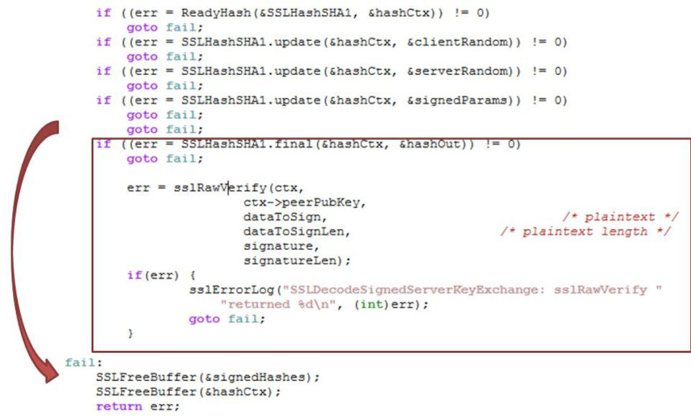

Chap 5 : Agilité et eXtreme Programming

M4104 - PEL : Agilité et bonnes pratiques de programmation
Institut Universitaire de Technologie de Bayonne et du Pays Basque
Robin Lucbernet - Christophe Marquesuzàa - Damien Urruty
DUT Informatique 2020 / 2021 - Semestre 4
Quel est le point commun entre


Mars Climate Orbiter
- Sonde écrasée sur Mars en 1999
- Erreur causée par un problème d'unité (système métrique vs anglo-saxon)
- Coût total : $327 millions
Apple "goto fail"

Apple goto fail
- Faille dans la validation de certificats HTTPS (iOS et OS X)
- Double goto court-circuitant des validations
- Des millions de machines vulnérables
Gandhi dans le jeu

- Censé être le personnage le plus pacifique du jeu
- A cause d'un integer underflow devient le plus aggressif
Bug, bug, bug...
- Ce ne sont que 3 exemples parmi des millions (voir M2204 et M3301 pour d'autres cas)
- Ajouter à cela les projets abandonnés, en retard ou au budget dépassé (voir CHAOS report)
- Il y aura toujours des comportements non prévus et des bugs...
Bon alors, on fait quoi ?

Dans les années 1990, certaines méthodes sont créées pour alléger le développement logiciel
Quelques exemples de méthodes légères
- RAD (Rapid Application Development)
- UP (Unified Process)
- SCRUM
- eXtreme Programming
- ...
Manifeste agile
- En 2001, les créateurs de ces différentes méthodes organisent une rencontre
- 17 développeurs se retrouvent ainsi dans une station de ski pour dégager un socle commun à ces méthodes
- C'est là que nait le manifeste agile
Manifeste agile
Nous découvrons comment mieux développer des logiciels par la pratique et en aidant les autres à le faire. Ces expériences nous ont amenés à valoriser :
Manifeste agile: valeurs
- Les individus et leurs interactions plus que les processus et les outils,
- Des logiciels opérationnels plus qu’une documentation exhaustive,
- La collaboration avec les clients plus que la négociation contractuelle,
- L’adaptation au changement plus que le suivi d’un plan.
Manifeste agile
Nous reconnaissons la valeur des seconds éléments, mais privilégions les premiers.
Référence: https://agilemanifesto.org/
Manifeste agile: principes
1 - Notre plus haute priorité est de satisfaire le client en livrant rapidement et régulièrement des fonctionnalités à grande valeur ajoutée.
Manifeste agile: principes
2 - Accueillez positivement les changements de besoins, même tard dans le projet. Les processus Agiles exploitent le changement pour donner un avantage compétitif au client.
Manifeste agile: principes
3 - Livrez fréquemment un logiciel opérationnel avec des cycles de quelques semaines à quelques mois et une préférence pour les plus courts.
Manifeste agile: principes
4 - Les utilisateurs ou leurs représentants et les développeurs doivent travailler ensemble quotidiennement tout au long du projet.
Manifeste agile: principes
5 - Réalisez les projets avec des personnes motivées. Fournissez-leur l’environnement et le soutien dont ils ont besoin et faites-leur confiance pour atteindre les objectifs fixés.
Manifeste agile: principes
6 - La méthode la plus simple et la plus efficace pour transmettre de l’information à l'équipe de développement et à l’intérieur de celle-ci est le dialogue en face à face.
Manifeste agile: principes
7 - Un logiciel opérationnel est la principale mesure d’avancement.
Manifeste agile: principes
8 - Les processus Agiles encouragent un rythme de développement soutenable. Ensemble, les commanditaires, les développeurs et les utilisateurs devraient être capables de maintenir indéfiniment un rythme constant.
Manifeste agile: principes
9 - Une attention continue à l'excellence technique et à une bonne conception renforce l’Agilité.
Manifeste agile: principes
10 - La simplicité – c’est-à-dire l’art de minimiser la quantité de travail inutile – est essentielle.
Manifeste agile: principes
11 - Les meilleures architectures, spécifications et conceptions émergent d'équipes auto-organisées.
Manifeste agile: principes
12 - À intervalles réguliers, l'équipe réfléchit aux moyens de devenir plus efficace, puis règle et modifie son comportement en conséquence.
Manifeste agile
Ces valeurs et principes ont surtout trait à l'organisation et l'état d'esprit de l'équipe
Il y a peu de recommendations techniques
Manifeste agile
Attention !
Manifeste agile - attention
Constamment s'adapter au changement aura de grandes conséquences sur le logiciel
Il faut des pratiques techniques appropriées pour conserver un niveau de qualité maximal
Communication
Simplicité
- Favoriser le code le plus simple qui puisse marcher
- Eviter la complexité dans le code (over-engineering)
- Eviter la duplication
- Simplifier au max la communication dans l'équipe
Feedback
- Etre constamment à l'écoute et réagir
- S'améliorer continuellement
- S'appuyer au maximum sur les boucles de feedback courtes
Boucles de feedback

Courage
- S'exprimer au sein de l'équipe
- Accepter nos limites
- Dire la vérité: transparence totale
- S'adapter au changement
Respect
Principes
- Le client pilote le projet
- Livraison régulière et très fréquente
- Auto-organisation
- Tests automatiques pour toutes les fonctionnalités (tout code qui va en production doit être testé)
- Amélioration continue du code (refactoring)
- Apprentissage continu (pour soi et pour les autres, ex mentoring)